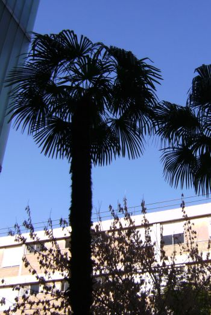
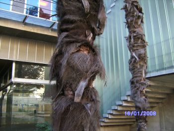

|
Trachycarpus
fortunei (Hook.)
H. Wendl,
in Bull. Soc. Bot.
France 8: 429
(1862) ["1861"]
Chamaerops
fortunei Hook. |
|
| Palmera de Fortune - Falso
palmito - Palmito elevado o chino |
Palmera |
|
Palmera
monoica, de tronco único hasta de 12-15 m de altura y
20 cm de
diámetro, cubierto con restos de las bases de las
hojas viejas,
con
abundantes fibras de color oscuro (1). Hojas palmeadas, redondeadas; pecíolo 65-90 cm, con la base cubierta de fibras y los márgenes finamente aserrados; limbo 1,20 m de diámetro, a veces con el envés más pálido, dividido hasta la base en segmentos erectos o ligeramente curvados en su punta, de color verde oscuro. (1) Inflorescencias interfoliares, más corta que las hojas, con masas de flores amarillas y olorosas, unas masculinas y otras femeninas (1). Flores unisexuales, muy pequeñas, amarillas y olorosas (1). Fruto tipo baya, de 1,2 cm, esférico o arriñonado, de color negro azulado, con una sola semilla rica en aceite (1). Florece en marzo o abril (2). |
 Fotos: Víctor Jiménez, Enero - 2008 |
|
 |
Observaciones:
Trachycarpus,
del griego trachys = rugoso, áspero y karpos
= fruto, por el fruto de algunas especies del
género. Fortunei,
dedicado a Robert Fortune (1812-1880), recolector y
horticultor
escocés.
Se multiplica por semillas, tardando unos 3 meses en germinar. Es una de las palmeras más resistentes al frío y resiste también temperaturas elevadas. Facilmente reconocible por su tronco muy peloso. Poco exigente en cuanto a calidad de suelo. |
|
Área de origen.- Este y centro de China, Japón y Birmania |
|
| Uso en el
campus: Ornamental: 3 ejemplares en E.T.S. de Arquitectura y 1 ejemplar en el Colegio Mayor Hernando Colón |
Localización:
E.T.S.
de
Arquitectura
Colegio Mayor Hernando Colón |
| Víctor Jiménez González (2007) & Carlos Romero Zarco (2008) | |